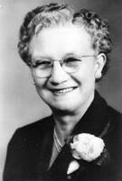

Chapter 75 - MY GRANDPARENTS
I feel very fortunate to have lived close to my grandparents as I was growing up. They were a great source of support, example and love.
GRANDPA BUSHNELL:
Grandpa was a big man both in height and stature. He had a beautiful tenor voice and was in the Clearfield male chorus lead by a Mr. Christensen who was also my Jr. High chorus teacher. Grandpa was asked to sing at funerals and weddings a lot. Especially down in Millard County where he was from. Grandmas health wasn't too good, and she felt she had too many home responsibilities - so many times grandpa would take one of us grandchildren with him. I loved to go. We'd visit along the way and he would always stop at a drive in and buy us a hamburger and malt. I always looked forward to that and to being with grandpa on a trip. Grandpa sang at my wedding reception. Grandpa had a sweet tooth, so he always had candy and other sweets and pastries in his home, and carried white mints in his pocket. He was always sharing them with us. Grandpa sat up a tradition for us children. Every Sunday morning as long as I can remember after they moved next door, he'd come over and give us a Sunday nickel for each of us grandchildren. When we got older, it was a dime. I thought that was special. Our family didn't have much extra money and I hated to ask Mom or Dad for money - so I looked forward to this Sunday nickel or dime, so I could buy me a treat at the corner gas station during the week.
Grandpa had a temper, so we tried to steer clear of him if we'd misbehaved or if he was in a mad mood. I can remember riding with him and grandma in their car and grandpa would get out of patience with the other drivers and say to grandma "Get their license number, I'm going to turn them in." Little grandma would say "Now dad".
Grandpa also had a heart of gold and he loved visiting the sick and going to rest homes to cheer up the aged and afflicted. He did this a lot in the evenings.
I remember Thanksgiving at Grandpa & Grandmas. Uncle June and Aunt Marilyn and sometimes Uncle Van, Aunt Allison & family and sometimes some of their other children and family and always our family would be there. Mom would always go over the night before and help grandma made the stuffing and stuff the turkey. Grandma had the best stuffing recipe. Ken loves it, so he helps me make it every year for our family and others. Then Mom & grandma would fix a delicious dinner with all the trimmings Thanksgiving morning and the others would bring food if they came. Grandpa would always make delicious lime punch. That was one of the highlights of the meal for me. We didn't have punch a lot as Mom & Dad were very health conscious and didn't feel punch was good for us. We mainly drank milk and water. Even now when I make punch, I think of Grandpa's lime punch. Mine never tastes as good as grandpa's did. After dinner and the dishes were done, Mom and her brothers and wives (sometimes Grandma & Grandpa, but hardly ever my dad as he didn't like to play card games except "Authors" and he was really good at that. So, dad would usually go over home and read) us children would usually sit around and watch them play. Mom loves to play games and she'd laugh and have such a good time. I can remember Uncle June with all his swear words. He was a truck driver and had gotten into a bad habit of swearing, but he had such a sense of humor that we all overlooked (or tried to) his language even though it shocked us many times.
Soon after Ken & I were married and living in the Duplex apartment, we liked to sleep in on Saturday mornings as we both worked during the week, but often Grandpa would pound on our door at 7 am, and when we sleepily went to the door, Grandpa would say “Aren’t you up? It’s time you were up as its 7 am and I need your help”. We were not so happy about that.
I remember one time after Ken & I were married that our family and Grandpa & Grandma were going up to Logan. Mom asked Ken & me to ride with Grandpa & Grandma since their car was full with them and my younger brothers & sister. We did, but grandpa kept getting mad and complaining about the other drivers until it really upset Ken and me. While we were at Logan, we asked Mom if some of the other children could ride home with Grandpa & Grandma as we had had our fill of Grandpa and his complaining. The other children didn't want to, so we had to return home by way of Grandpa's car. I think Grandpa realized how upset it had made us, or maybe Grandma got after him - anyway he was much better going home. In fact, he stopped and bought us a malt. (I think to make up for his bad behavior)
My dad and grandpa Bushnell had such a good relationship. When grandpa had his second heart attack and Dad was driving him to the hospital, he told dad he wouldn't make it this time, that he would die. Dad was really sad. And after grandpa died and his casket was in the church down in Meadow (as that was where he wanted to be buried) dad said he was alone with grandpa and he suddenly felt grandpa's presence and felt grandpa was about to speak to him when someone walked in and interrupted it. He felt bad as he felt grandpa had something to say to him.
Grandpa Bushnell died December 29th, 1962. Mom had invited Ken and I, and Grandpa and Grandma Bushnell out for my birthday supper. Grandpa had said the blessing on the food. After supper Ken and I went home, and Mom, Dad, Grandpa and Grandma went to see a show "The Big Country". After the show and Mom and Dad were in bed; Grandma called Mom and told her that Grandpa was in a lot of pain and she was afraid he was having a heart attack. Mom and Dad went over and finally Dad took Grandpa to the hospital. Dad said he knew he wouldn't bring Grandpa back home. Grandpa died a few minutes after he arrived in the hospital. Grandpa's funeral was beautiful. The choirs which Grandpa sang in with Brother Christensen conducting sang two numbers. Dad talked, Bishop Nicholas talked, etc. Our young Marrieds Group here in the ward sent a bouquet of flowers out. Blaine and Launa Barrows were the leaders. Dick & Barbara Brower and Kent and Deon Horton came out to the mortuary which I thought was very sweet and thoughtful.
From Grandpa's obituary: Sunset - George Labrum Bushnell 1741 N. Main died this morning in the Dee Hospital in Ogden of a heart attack. Mr. Bushnell was born June 12, 1892, in Meadow, Utah a son of Howard B. and Mary Elizabeth Labrum Bushnell. He was educated in Meadow and Fillmore. He was retired from Hill Air Force Base as a warehouseman.
He was married to Iva Bell Swallow on Sept 29, 1915, in the Manti Temple. He was a high priest in the Sunset Second Ward. He served a mission in the Western States and four stake missions. He had been a member of the Clearfield-Sunset Priesthood Chorus, was past Sunday School superintendent and stake mission president and had been a temple worker.
Surviving are his widow, four sons and two daughters.
GRANDPA BUSHNELL'S PHILOSOPHY OF LIFE - written 11 Oct. 1958 while convalescent after a heart attack.
"I AM NOT AFRAID"
I'm not afraid to die. This is not boasting. I am not brave, I fear a lot of things. I often cringe before the threats of life. In the face of great calamity, I might play the coward, but I am not afraid of death. I fear it only for the ones I love.
When they die the sun will set at noon for me and I shall limp about in darkness. And when I die I fear for them. For no man has lived so worthless but someone adored him over much and mourned him when he was no more.
But for myself alone I am not afraid of death. Why should I be? It's just as natural as birth. I do not know for sure what life may be after death. But I am sure I shall try to live the best I can, so I may receive the reward I am deserving of. I do not know for sure what it was before birth.
If life is everlasting which I am sur. I lived many years ago before my spirit entered this earthly body. My spirit mingled and associated with many numbers of spirits, many who have had the privilege of coming to earth and entering earthly bodies as I have done. Then after this spirit of mine leaves this earthly body it shall go back to mingle again with those spirits who have lived true honorable lives while here upon the earth. There they shall be given Celestial bodies and shall live for time and eternity, even endless days. For eternal life must be without beginning of years as well as without endless days.
Nothing proves that I see not beyond the ground walls of the grave.
This I know as far as human mind may know that I shall live always. This is my faith. It presents no tangible evidence for human courts of inquiry.
I have what Prophets name as inner witness to eternal life. But this is not easily geared down by chains of logic to solid traction wheels of demonstrable truth.
I also have a most convincing record "The Bible" which tells of one who conquered death and was resurrected proving that we will live again.
I was not there to prove it myself, nor have I ever met a man returned from out the boundless deep who has been resurrected who verifies my faith. I only feel through inspiration within myself that it is true.
That satisfaction, that knowledge, that faith, nothing can destroy. This life is on the duller side of death.
And even though this faith were vain, I am not afraid. If death was all the nothingness could do nothing to me. But this I know this life is but the beginning and can do everything to me.
I'm so afraid of so many things, life's problems frighten me. I hide from quite imaginary foes. But I am not afraid of death. I know that my Redeemer lives, and if I conduct my life as our Savior has set the example and plan I shall be able to mingle with him and my loved ones who have gone before. For they are not lost, but gone to a better place to live.
I want to live honorably among my fellow man. My desire is to make others happy. THIS TO ME IS TRUE HAPPINESS.
And I can say with all truthfulness as Job said "I know that my Redeemer lives and that he shall stand at the later day upon the earth, and though after my skin worms destroy this body, yet in my flesh shall I see God. Whom I shall see for myself and mine eyes shall behold and not another.
I want to live that when death does come that I will e able to meet my Mother and Father, put my arms around them and thank them for teaching unto me the true plan of salvation, and for instilling unto my soul a testimony of the Gospel. That I with my lovely wife who has been true and a real Latter-day Saint Companion, and also our family may be exalted in the kingdom of our eternal father.
I do know it shall be if I and they live the commandments and teachings given through our Savior.
THIS IS MY SOUL DESIRE.

GRANDMA IVA BUSHNELL
Grandma was such a sweet tiny little lady. Her back was humped over. I'm sure she had scoliosis like my mother and I have inherited. She probably also had osteoporosis like my mother has. Grandma didn't go to chiropractors (not sure if they had them at that time) so her back hurt most of the time. She was a hard worker. She enjoyed working in her garden and flower garden. She raised seven children. She didn't have the modern conveniences we have today.
Grandma worried a lot, so I think her nerves caused a lot of her health problems. She also had numb spells where her arms and other parts of her body would go numb at times. The doctors couldn't find out what caused them. Since I go to Chiropractors, I wonder if she had pinched nerves.
We always figured grandma would die first because of her bad health. Because Grandma had a lot of health problems, she had to take tea as one of her medications. She argued with the doctor about taking it - as she said it would make her break the Word of Wisdom. Grandma was very active and faithful in the church and she had always kept the Word of Wisdom. The doctor told her she could take pills instead, but they wouldn't do her near as much good, and they would have the same nutrients in that tea did - that tea was a medication. She did finally consent to take it, but she wouldn't put any sugar or milk in it. She told us that if it had to be a medication, it would have to taste like it.
When Grandma moved from Meadow to Sunset, she had long hair and she wore it in a braid which she wrapped around the back of her head. She let me brush her hair and even braid it as I got older. She finally got it cut off and she looked really nice with her short haircut and perm. I had a talent of fixing hair so many times when I was a teenager and young married and lived close by, I would wash and set her hair and comb it out for her. Many times, she would ask me to straighten it so it would still look nice when she was going someplace or having company. I did the same for Mom, however, Mom had a hairdresser and had it washed and set every two weeks, so she would have me straighten it during that time. If Marie couldn’t take her or she was ill and had to cancel, she would have me do it. Later when we moved back to Utah and were living in Sunset or Layton, I would cut dad’s hair. He would say afterwards “Do I look 10 years younger?”
Grandma loved her family and enjoyed her grandchildren. We loved going to her house.
Grandma Bushnell had a very hard time after Grandpa died. She had so many things wrong with her health and she worried so much that she went downhill very rapidly. In October of 1964 she passed away. The doctors had thought she had pernisha Anemia. Her blood was very low and due to this she would faint easily, was very weak, and felt lousy. Finally, they put her in the hospital. They took tests & X-rays and found she had cancer. They hadn't found it before as the shadow of her heart covered the tumor. At that time Bryce was down at B.Y.U. for his three months schooling in the Spanish language prior to leaving for his mission to Uruguay. He phoned Mom and told her that since his plane would be leaving at 6:00 a.m. on Tuesday morning they had received permission (all the missionaries leaving for Uruguay) to have their parents and families come down to the Y on Monday afternoon and visit with them. When Grandma heard this, she started to get better for she loved Bryce so very much (he was her favorite) He loved grandma and had always teased her and gotten extra close to her. She wanted to go down with us to see Bryce before he left. She did get better, at least enough to be able to go with us. Julie, Bryce's girlfriend, went down also with us. We had a wonderful time being with Bryce and seeing him off the next morning. One thing I regret was that Grandma had asked me if, when we were at the park before Bryce came, would I straighten her hair as it didn’t look very good with being in the hospital. I told her I would, but I forgot. She mentioned to Mom after we had gone home, that she wished I would have fixed her hair so that she could have looked nice. The next day Grandma was back in the hospital and she continually got worse. Mom, Aunt Joy, and myself took turns staying with Grandma. Another regret was the morning that Grandma passed away, I had stayed with her from 6:00 in the morning until 10:00. Grandma was very sick and had pneumonia. She was in an oxygen tent. She could hardly breathe and was so miserable. At one time, she asked me if I would ask the nurse if she could have some more pain medication. I found the nurse and asked her, and she was rude and said “Oh, these old people, they just think they can be waited on all the time and have whatever they want. No, she can’t have any more pain medication at this time.” I felt bad, but didn’t stand up to her like I wish I had. When I told Grandma, she just sighed and looked sad and miserable. I don’t know why they couldn’t have given her more to make her more comfortable as she was dying. I get angry at that nurse whenever I think of the last days with Grandma. Sister Blaine, a friend and neighbor, came to relieve me. I went home never to see grandma again in this life. I had just gotten home when the nurse called and said Grandma was worse and for me to come up. By the time I got there she had died. I thought they had called Mom, but they hadn't so I had to call her and break the news. When Grandma's body was in the casket, Mom & I didn't like the way they had fixed her hair - it didn't look like her, so Mom asked me to straighten it, which I did.
I loved her very much and I have surely missed her. We have all missed her, especially Mom. They lived next door, so Mom & Grandma did a lot together. They were very good friends. Georgia had been spending the nights (sleeping there with her) so Grandma wouldn't be alone at night as Grandma was frightened of the dark, so Georgia was surely saddened. Bryce, when he found out, was very sad. He said he had surely hoped that she would still be alive when he returned home and that had been Grandma's wish that she could be alive to see Bryce when he returned from his mission.
From Grandma's obituary: Sunset - Mrs. Iva Bell Swallow Bushnell, 70 of 1741 N. Main, died Thursday in the Dee Hospital in Ogden of natural causes. Mrs. Bushnell was born Aug. 6, 1894, in Meadow, Ut, a daughter of Charles & Isabell Deardon Swallow. She was married to George L. Bushnell on Sept. 29, 1915, in the Manti Temple. He died Dec. 29, 1962.
She came to Sunset 23 years ago from Meadow. A member of the LDS Church, she worked in the Primary and had been a Relief Society visiting teacher. She was active in Daughters of Utah Pioneers.
Surviving are four sons, Howard Elmo Bushnell, Henrieville, Utah, Dean Charles Bushnell, El Cajon, Calif.; George Junior Bushnell, Bountiful, Van Ladd Bushnell, Cedar City, two daughters, Mrs. Glendon (Mildred Hope) Porter, Sunset, Mrs. John C. (Elaine)(goes by Joy to family) Ashman, Fillmore, 24 grandchildren, six great-grandchildren, 4 brothers & 5 sisters.
I REMEMBER - grandma praising me for the way I have frosted and decorated cakes after Ken & I were married.
Grandma asked me to wash down her kitchen walls and ceiling and she paid me $5.00. She had wallpaper on the front room walls so when I cleaned them I would use a cake of cleaner to do it.
Grandma was a good cook and a good housekeeper. She gave us grandchildren pie, cake or cookies many times when we would go over to her house.
Several times when Mom & I were planning to go shopping in Ogden for clothes, etc., Mom would ask Grandma if she felt like going with us and she would say "Oh, you and Mae just need to be by yourselves, you don't need me tagging along". I told her that if she felt like it, we wanted her along - that it made it more special, which it did.
When I would invite Mom, Dad & family over for Sunday dinner or Family Night, etc., I'd also invite Grandma as Grandpa had passed away and she'd say "Oh, you don't have to feel that you need to invite me every time." But we enjoyed having Grandma.
I remember listening to Grandma & Grandpa's old records on their old record player. I enjoyed that.
Christmas morning was also special as we'd go over to Grandpa and Grandma's and they would always have something for us. Not a lot as they didn't have much money, but that didn't matter. We always appreciated what they gave us and the love that went with it.
Grandma & Grandpa loved going to parades - so our family always went to the 24th of July Parade in Ogden every year. We would park the car and walk carrying our lawn chairs and blankets. I looked forward to that and being together. Ken doesn't like parades - so our family hasn't gone to many. I remember taking Jeff to one in Layton when he was young. And last year (1997) Ken & I took our grandchildren, David & Tayler, to the Layton parade. Ken was sweet and knew I would like to go - so suggested we take them. I was delighted and really enjoyed it.
I have some regrets of those last few days with Grandma. One was when we went down to see Bryce, she had asked if I would comb her hair to make it look nice to see Bryce. I fixed Grandma's hair much of the time for her. I guess that is one of my talents as I have always been able to fix my hair the way I like and set and comb out, and recomb both Grandma Bushnell's hair and my mothers. I have been happy to be able to do this service for them. Anyway, at this particular time, I forgot to comb her hair for her. She had asked me when she got into the car to go down to Provo. I intended to comb it as soon as we got there, but I was excited to see Bryce and we all got to talking, then went to a park and had lunch, etc. Grandma told Mom later that she felt bad I hadn't combed it as she sure didn't look very pretty with lying in a hospital bed and she wanted to look nice for Bryce and everyone. I wish she had reminded me.
The other regret was just a few days before she passed away, Grandma had phenomena as well as cancer, which at that time they thought she had Pernisha Anemia and were treating her for that. She was having such a hard time breathing that they had her in an oxygen tent. She was so miserable and in so much pain that she asked me if I would ask the nurse if she could have some more pain medication. I went to find the nurse, but this nurse was annoyed and said that she didn't need it, that old people like her just complain and want lots of attention. I should have known better because Grandma was such a sweet little woman and she didn't complain. She was really bad before she would ever say anything. Many times, when she was really sick or in pain and we would ask her how she was, she would say "oh, pretty good". Anyway, I told grandma that the nurse said she didn't need any. That hurt Grandma that the nurse felt that way, and that I didn't do anything more to try to get help & relief for her. I remember thinking that maybe the nurse was right. I've felt like kicking myself many times since then - that I felt that way and that I didn't do more when she needed me. I know now that she really was terribly sick and in so much pain. She was dying so it sure wouldn’t have hurt to give her more pain medication, even if it wasn’t time. They came to weigh her a little later and I hated to see them have to pick her up and put her on the scales, she was too miserable and so thin.

Grandpa & Grandma Bushnell lived in Meadow until after we built on the upstairs of our home in Sunset. Then they sold out and my parents talked them into moving up and purchasing the lot next to our home. While their home was being built, they rented an apartment about a block away on the highway which a Mr. Randall owned, and then they moved into our basement for awhile. It was great having my grandparents so close.
(For more history on Grandpa & Grandma Bushnell, refer to the yellow booklet entitled: "History of George Labrum Bushnell and Iva Bell Swallow Bushnell” It has their pictures on the cover. My mother compiled these histories)
Grandpa & Grandma Porter lived in Richfield, Morgan County. We would go up quite often, especially on Sunday afternoons after fast and testimony meeting. It was a beautiful ride up the canyon and I liked being with Grandpa and Grandma.
GRANDPA PORTER:
I remember Grandpa as being a short, quiet, gray haired man with a mustache. I have heard, and his own autobiography states that he believes his growth was stunted because of too much really hard work.
I loved going to Grandpa & Grandmas as they had a farm up in Richfield (southwest of Morgan) Grandpa would let us ride Old Doll or Old Dan, his work horses. They were really big. One 4th of July when my cousin, Joanne, and I were riding one of these horses, Hal lit a firecracker and threw it under the horse. Of course, it started running and bucking and we were thrown off, but not seriously hurt, thank goodness.
I remember Grandpa coming in the house at night after his days work on the farm, and all of us sitting down at the table to eat supper which usually consisted of bread and milk, fruit, jam and honey, etc. We children preferred crumbs and milk, partly because it was fun grinding the hard bread into crumbs.
Grandpa was a scriptorium. He loved the scriptures. He read and pondered them a lot. Dad said that Grandpa wasn't a very good farmer and partly because his mind wasn't on it. Instead of thinking what he could do to improve the farm, while he worked, he would be thinking and pondering the scriptures. He wrote lots of poetry and one was "Morning Glory of the Soul" which he thought of while he was weeding the Morning Glory weed out of his farm. Dad said that people came from all around to talk to Grandpa about the scriptures - as he knew them so well.
I remember Grandpa and Grandma Porter going on some trips or just for a ride with us sometimes, and we loved having them with us. It made it more special to have them along.
(Refer to Grandpa's history, for more information on him, in the blue Byron Porter Descendants book, which I was blessed to compile)
GRANDMA PORTER:
I remember Grandma for her love of reading, her ability to memorize and give talks, readings, poetry, scriptures, etc. Whenever we played church games such as "Seek" or "Zion" with her, she always won because she knew the scriptures so well. She loved to have her family around her. I enjoyed visiting with grandma, and she would get out her scrap books and photo albums and enjoy showing them to me and explaining each picture, card, newspaper clipping, etc. I'm sure most of the family members remember times of reminiscing with grandma with her books and albums. Perhaps I got my love of scrapbooks & photo albums from her.
When Sandi was little, we'd go to visit grandma. She lived in one of my parent's duplex apartments at the time and she'd always have a cookie or piece of candy for Sandi. She wanted lots of grandchildren and great grandchildren. When I was just a young girl, I remember grandma saying she would be glad when I got married and had some great grandchildren for her. I remember being mortified at even the thought of marriage. I didn't even like boys at that time of my life.
I also remember how grandma hated to waste anything. While growing up, when grandma would help Mom and I clear up the dishes after a meal, I was surprised at how she would clean out the dishes and bowls so not a crumb was left. These leftovers would be put in the refrigerator to be sued at a later meal. I'm sure she learned this because of the scarcity of food and money to buy food while she was raising her family. She taught me how important it is not to waste and I'm trying to teach this to my family. I've heard someone say that some women throw out more with a teaspoon than their husbands can bring home with a wheelbarrow.
Grandma Porter passed away June 4, 1965. She has been very healthy all of her life. These last few years her eyesight and hearing were bad, but other than that and gas pains which kept her from sleeping good at night, she felt fine. This last Christmas she had a slight stroke and then in April she had a bad stroke and was more or less in a coma until she passed away in June. She was put in the hospital at first, then they put her in a nice nursing home, but Aunt Maurine wanted to have her there in the apartment with her, so she could take care of her and be near her. The other members of the family were reluctant, but finally they consented, and Grandma was with Aunt Maurene for about a month. Aunt Maurine had studied to become a nurse, years earlier, so she knew what to do for her.
Taken from the newspaper article celebrating her 85th birthday: May R. Porter celebrates 85th birthday. Clearfield - In celebration of her 85th birthday, Mrs. May R. Porter of West Point was honored by her family at a dinner party at the home of a son and daughter-in-law, Mr. and Mrs. Dale R. Porter in Clearfield.
Mrs. Porter was born Sept. 27, 1875 in Farmington, a daughter of Mary Elizabeth Clark and Joseph E. Robinson. She attended the LDS Business College, University of Utah and Brigham Young University and worked as private secretary to Heber J. Grant in his insurance office, and also for the president of Utah State Agricultural College in Logan, which she also attended.
Mrs. Porter was married to Byron Porter on Sept. 14, 1904 in the Salt Lake LDS Temple. She has been very active in the church and is doing Temple work at the present time. She served as the first secretary to Mrs. Aurelia S. Rogers, Farmington, who organized the first Primary organization for the LDS Church. She also served as stake secretary for the Davis Stake for several years and says she has not missed a "Leadership Week" in Provo for the past 11 years. She has been noted for her dramatic readings.
Since the age of 80, Mrs. Porter has taken many tours throughout the western states and Canada.
She is the mother of seven sons and daughters, (It names them) She has 25 grandchildren and five great-grandchildren.
Among out of town guests who attended the party was an 87-year-old brother, Albert C. Robinson of Los Angeles.
For Grandma's 85 birthday party, I was asked to make the cake since I was doing some cake decorating at that time. Ken & I were invited, but we were the only grandchildren. It was just her children and their spouses, and Grandma’s brother, Albert. This is Grandma with her children: (Back row - left to right) Enid, Verle, Glen, Dale & Merlynn. (Front row) Maurine Grandma and Royal.
Taken from Grandma's obituary: Sunset - Mrs. Mary Elizabeth (May) Robinson Porter, 89 of 1747 N. Main, died Friday at the home of a daughter, Mrs. Mary M. Porter, in Clearfield. Mrs. Porter was born Sept 27, 1875, in Farmington, Utah, a daughter of Joseph Elijah and Mary Elizabeth Clark Robinson. She was married to Bryon Porter on Sept. 17, 1904 in the Salt Lake LDS Temple. He died Aug. 28, 1951. She was reared in Davis County and spent most of her life n Morgan and Meadow, Utah and had lived in Sunset the past three years. She was a member of the LDS Sunset Second Ward. Surviving are four sons and three daughters, Glendon C. Porter, Sunset; Joseph Verle Porter, West Point; Elmer R. Porter, Dale R. Porter, Mrs. Mary M. Porter, all of Clearfield; Mrs. J.P. (Merlynn) Olsen, Ogden; Mrs. A. Wayne (Enid Fern) DeGraw, Salt Lake City; 26 grandchildren, 15 great grandchildren, one brother, Albert C. Robinson, Los Angeles, five half brothers, w. o. Robinson, Frank Robinson, both of Salt Lake City; Dr. R.C. Robinson, Farmington, Grant Robinson, Idaho Falls; Clifford Robinson, California; Five half sisters, Mrs. Hannah Maude Foote, Mrs. Anna Pearl Trumbell, Mrs. Paul (Lizzie Beth) Tomasson, all of California; Mrs. Wallace (Mattie) Bourne, Garland; Mrs. Clara Porter, Ashton;, Idaho. Funeral services will be held Tuesday at 1 p.m. in the Sunset Second Ward Chapel with Counselor Carl Grimstead conducting. Friends may call at the Clearfield Mortuary Monday from 7 to 9 p.m. and Tuesday until 2:30 p.m. Burial in South Morgan Cemetery.
(for more history on Grandma Porter, refer to her history in the Blue "Byron Porter Descendants" book which I compiled)
LIST OF ANCESTORS WHO LIVED IN NAUVOO
Ken’s Ancestors:
· Jonathon Browning & Elizabeth “Betsy” Stalcup
· Pierre Louis Chatelain & Magdelaine Malan
· Alexander Brice Hill & Emma Vilate Munjar
· Hyrum Oscar Crandall & Margaret Oscar Guymon
Mae’s Ancestors:
· Sanford Porter Sr. & Nancy Areta Warriner
· Lyman Wight Porter & Electa Mariah Kilbourne
· Ozias Kilbourne Jr. & Electa Grantier
· Joseph Lee Robinson & Maria Wood
· Ezra Thompson Clark & Mary Elizabeth Stevenson
· John Bushnell & Elizabeth Brockbank
· Henry George Labrum & Jane Criddle
· Thomas Swallow & Caroline Crow
· Thomas Dearden & Charlotte Davies